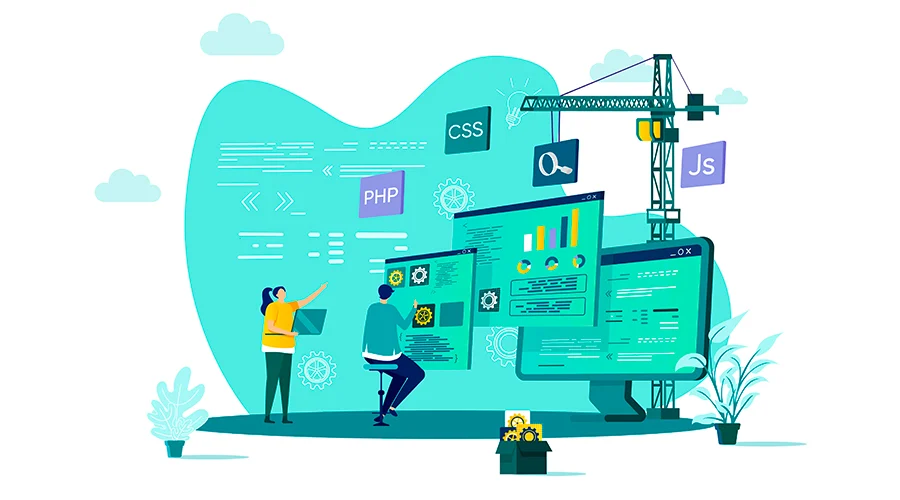
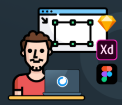
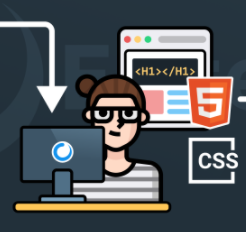
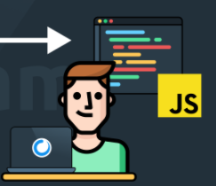
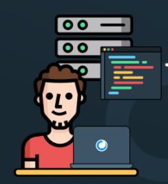
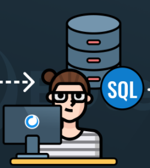
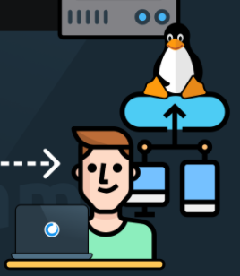

Front-End
¿Que es el Front-End?

El frontend es la parte del desarrollo web que se dedica a
la parte frontal de un sitio web, en pocas palabras del diseño
de un sitio web, desde la estructura del sitio hasta los estilos
como colores, fondos, tamaños hasta llegar a las animaciones y efectos.
Es esa parte de la página con la que interaccionan los usuarios de la misma,
es todo el código que se ejecuta en el navegador de un usuario, al que se le
denomina una aplicación cliente, es decir, todo lo que el visitante ve y experimenta
de forma directa.
Un front-end, es la persona que se dedica básicamente al diseño web, pero esto no
significa que no toque código, tanto el front-end como el back-end están en contacto
con código todo el tiempo.
¿Cuales son los roles dentro del Front-End?
UI Developer / Diseñador UI
Web Designer / Maquetador
Programador Front-end
¿Cual es la función de cada uno de los roles del Front End?
Diseñador UI
Diseña los flujos de usuarios, las pantallas e interacciones en un programa de diseño (No escribe codigo).

Maquetador
Lleva el diseño a código HTML y CSS. No se procupa de la lógica, solo de la presentacion.

Programador Front-end
Agrega datos reales desde una API y lógica a la presentación creada por el maquetador.

¿Cuales son los principales lenguajes y frameworks usados en el Front- End?
lenguajes
- Javascript
- CSS
- HTML
frameworks
- Foundation
- Bootstrap
- AngularJS
- Ember JS
- Backbone
Back-End
¿Que es el Back-End?
Mientras que el frontend es la capa de programación ejecutada en el navegador del usuario,
el backend procesa la información que alimentará el frontend de datos.
Es la capa de acceso a los datos, ya sea de un software o de un dispositivo en general,
es la lógica tecnológica que hace que una página web funcione, lo que queda oculto a ojos del visitante.
El backend de una solución, determina qué tan bien se ejecutará la aplicación y qué experiencia, positiva
o negativa, obtendrá el usuario de su uso.
Trabajar en este apartado supone algo totalmente diferente al frontend, ya que exige el dominio de otros
términos de programación, lenguajes que requieren una lógica, ya que esta área es también la encargada de
optimizar recursos, de la seguridad de un sitio y otros factores.
¿Cuales son los roles del BackEnd?
Backend Developer
Database Administrator
Administrador del servidor
¿Cual es la función de cada rol?
Backend Developer
Se encarga de la lógica del negocio (El código del lado del servidor) y crea las APIs para que el front-end pueda consumirlas.

Database Administrator
Diseña, implementa, mejora y mantiene el sistema de base de datos.

Administrador del servidor
Gestiona la instalación, soporte y mantiene el servidor en donde se aloja la web o app.

¿Cuales son los principales lenguajes de programación y frameworks del backend?
lenguajes
- Java
- Ruby
- Python
- PHP
- .Net
frameworks
- Symfony
- Django
- Flask
- Ruby on Rails
- Spring
- Express
- Laravel
- Asp.Net Core
¿Que es un Stack?
Los stacks son paquetes de software que comprenden el back-end de un sitio, incluyendo el sistema operativo, los servidores web, las API, los marcos de programación, etc.
Ejemplos de Stack
- MEAN Stacks
- MERN Stacks
- MEVN Stacks
- LAMP Stacks
¿Que es la arquitectura Cliente-Servidor?
La arquitectura cliente servidor tiene dos partes claramente diferenciadas,
por un lado la parte del servidor y por otro la parte de cliente o grupo de clientes
donde lo habitual es que un servidor sea una máquina bastante potente con un hardware
y software específico que actúa de depósito de datos y funcione como un sistema gestor
de base de datos o aplicaciones.
En esta arquitectura el cliente suele ser estaciones de trabajo que solicitan varios
servicios al servidor, mientras que un servidor es una máquina que actúa como depósito
de datos y funciona como un sistema gestor de base de datos, este se encarga de dar la
respuesta demandada por el cliente.
Video de Desarrollo
Vide de demostracón del desarrollo de esta pagina, donde se visualizara como se creo desde cero.